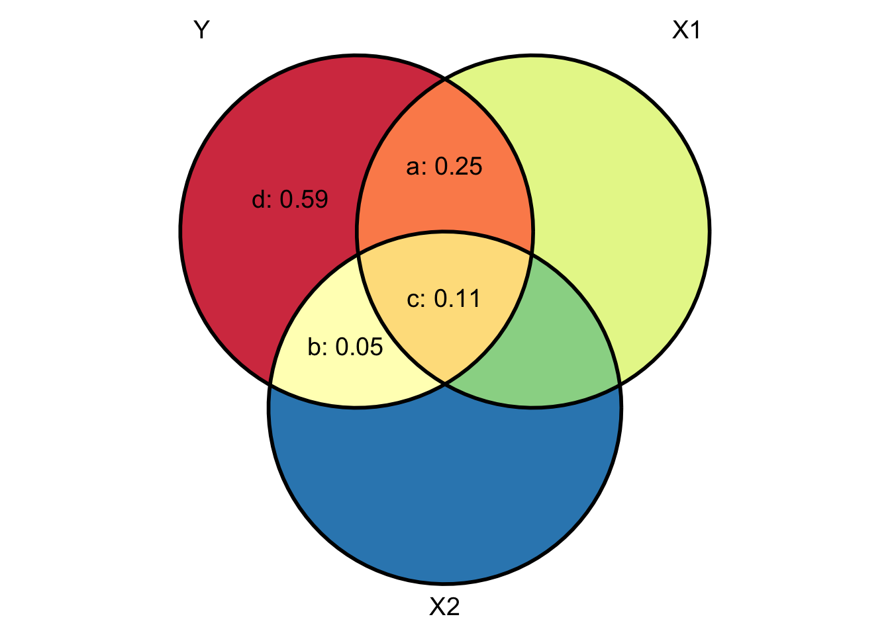
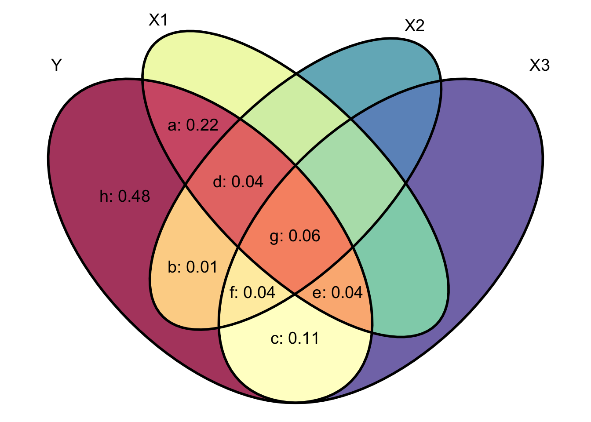
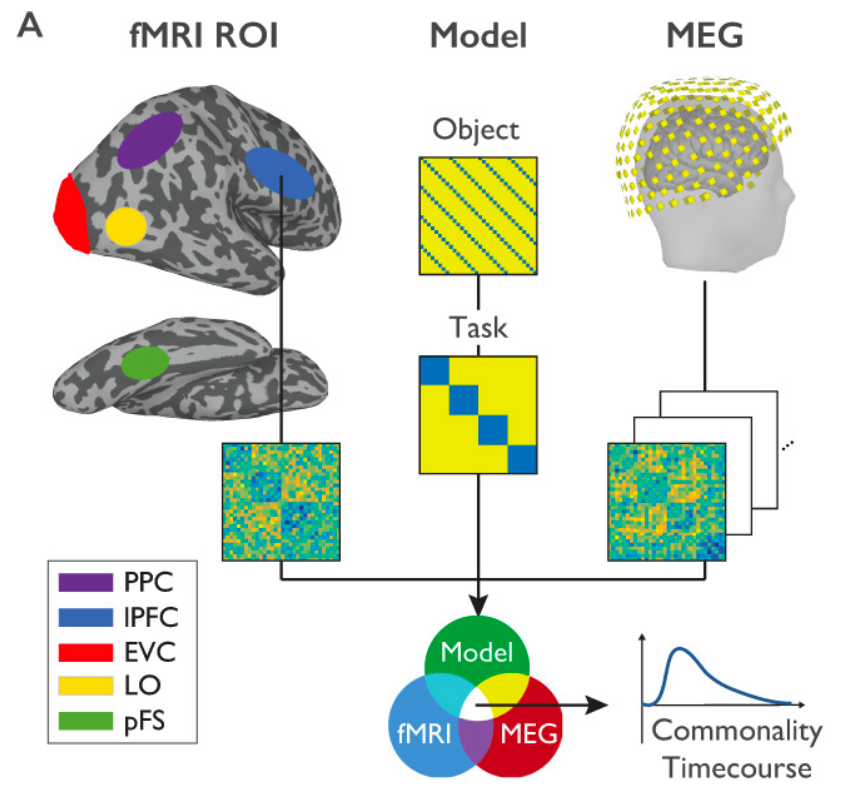

What proportion of variance in intelligence (e.g., IQ) can be uniquely attributed to genetic factors, independent of socio-economic influences? How do neuroimaging data from different modalities (e.g., fMRI and M/EEG) relate to one another and to theoretical models?
These questions highlight the critical role of shared variance in understanding complex systems. Commonality analysis provides a valuable tool for addressing such questions by partitioning the explained variance (\(R^{2}\)) in multiple regression into distinct components. It identifies how much variance is uniquely attributable to each predictor and how much arises from shared contributions among predictors. This approach helps to clarify multivariate relationships and assess the relative importance of each independent variable (Seibold & McPhee, 1979).
In this post, I will illustrate this method with practical examples in R and visual aids.
Disclaimer: This post reflects my personal effort to gain a better understanding of commonality analysis and should be interpreted with caution. I do not claim to have any special expertise on this topic.
Semi-partial correlations
A semi-partial correlation, also known as “part correlation” and denoted as \(r_{Y(X1.X2)}\), refers to the correlation between variables \(Y\) and \(X1\) with variation from variable \(X2\) removed only from variable \(X1\). In other words, this correlation assesses the extent to which the part of \(X1\) that is independent of \(X2\) correlates with all of \(Y\). It corresponds to region \(a\) in the Venn diagram below (divided by all parts of \(Y\), that is, \(a+b+c+d=1\)).

Semi-partial correlations can be computed as follows:
\[ \begin{aligned} sr_{X1} &= r_{Y(X1.X2)}=\frac{r_{YX1}-r_{YX2} r_{X1X2}}{\sqrt{1-r_{X1X2}^2}}\\ sr_{X1}^{2} &= r_{Y(X1.X2)}^{2} = \frac{a}{a+b+c+d} = R_{Y.X1X2}^2-r_{YX2}^2\\ sr_{X2} &= r_{Y(X2.X1)}=\frac{r_{YX1}-r_{YX2} r_{X1X2}}{\sqrt{1-r_{X1X2}^2}}\\ sr_{X2}^{2} &= r_{Y(X2.X1)}^{2} = \frac{b}{a+b+c+d} = R_{Y.X1X2}^2-r_{YX1}^2 \end{aligned} \tag{2}\]
# proportion of variance in Y that is explainable from X1 and X2
R2Y.X1X2 <- (ry1^2 + ry2^2 - 2*ry1*ry2*r12) / (1 - r12^2)
# proportion of variance in Y that is explainable from the part of X1
# that is independent of X2
shared_x1_y <- R2Y.X1X2 - ry2^2
# proportion of variance in Y that is explainable from the part of X2
# that is independent of X1
shared_x2_y <- R2Y.X1X2 - ry1^2
# printing the results
cat("sr2_x1 (a):", shared_x1_y, "\nsr2_x2 (b):", shared_x2_y)sr2_x1 (a): 0.2531868
sr2_x2 (b): 0.05318681In brief, the variance in \(Y\) that is uniquely shared with \(X1\) is the total variance shared between \(Y\), \(X1\), and \(X2\) (i.e., \(a+b+c\)) minus the variance in \(Y\) that is shared with \(X2\) (i.e., \(b+c\)). Reciprocally, the variance in \(Y\) that is uniquely shared with \(X2\) is the total variance shared between \(Y\), \(X1\), and \(X2\) (i.e., \(a+b+c\)) minus the variance in \(Y\) that is shared with \(X1\) (i.e., \(a+c\)).
Partial correlations
A partial correlation, denoted as \(r_{YX1.X2}\), refers to the correlation between variables \(Y\) and \(X1\) with variable \(X2\) removed from both variables. In other words, this correlation assesses the extent to which the part of \(X1\) that is independent of \(X2\) is correlated with the part of \(Y\) that is also independent of \(X2\). It also corresponds to region \(a\) in the Venn diagram (but divided now only by the parts of \(Y\) that are independent of \(X2\), that is, \(a+d\)).1 Partial correlations can be computed as follows:
\[ \begin{aligned} pr_{X1}^{2} &= r_{YX1.X2}^{2} = \frac{a}{a+d} = \frac{R_{Y.X1X2}^2-r_{YX2}^2}{1-r_{YX2}^2}\\ pr_{X2}^{2} &= r_{YX2.X1}^{2} = \frac{b}{b+d} = \frac{R_{Y.X1X2}^2-r_{YX1}^2}{1-r_{YX1}^2} \end{aligned} \tag{3}\]
# proportion of variance in the part of Y that is independent of X2
# that is explainable from the part of X1 that is independent of X2
r2_YX1.X2 <- (R2Y.X1X2 - ry2^2) / (1 - ry2^2)
# proportion of variance in the part of Y that is independent of X1
# that is explainable from the part of X2 that is independent of X1
r2_YX2.X1 <- (R2Y.X1X2 - ry1^2) / (1 - ry1^2)
# printing the results
cat("pr2_x1 (a):", r2_YX1.X2, "\npr2_x2 (b):", r2_YX2.X1)pr2_x1 (a): 0.3014129
pr2_x2 (b): 0.0831044Note that if \(X1\) and \(X2\) are uncorrelated, the semi-partial correlation \(r_{Y(X1.X2)}\) is equal to the correlation \(r_{YX1}\). However, the partial correlation \(r_{YX1.X2}\) is not necessarily equal to the correlation \(r_{YX1}\).
Relation to regression
Recall that the residuals of a univariate regression represent the part of the outcome \(Y\) that is independent of the predictor \(X\) (cf. this course):
\[ \begin{aligned} \hat{Y} &= \alpha + \beta X\\ \epsilon_{i} &= Y_i-\hat{Y}_i \end{aligned} \tag{4}\]
We can use this to construct a measure of \(X1\) that is independent of \(X2\):
\[ \begin{aligned} \hat{X}_{1.2} &= \alpha + \beta X_{2}\\ \epsilon_{X1} &= X_{1} - \hat{X}_{1.2} \end{aligned} \tag{5}\]
We can then correlate that value with \(Y\) to compute our semi-partial correlation:
\[ r_{\epsilon_{X1}, Y}=r_{Y(X1.X2)} \tag{6}\]
Or we can compute a measure of \(Y\) that is also independent of \(X2\) and correlate that with our \(X1\) residuals (equivalent to the partial correlation).
\[ \begin{aligned} \hat{Y} &= \alpha + \beta X_{2}\\ \epsilon_{Y} &= Y - \hat{Y}\\ r_{\epsilon_{X1}, \epsilon_{Y}} &= r_{YX1.X2} \end{aligned} \tag{7}\]
# creating a measure of X1 that is independent of X2
model_x1_x2 <- lm(x1 ~ x2, data = df)
# creating a measure of Y that is independent of X2
model_y_x2 <- lm(y ~ x2, data = df)
# computing the semi-partial correlation r_Y(X1.X2)
cor(residuals(model_x1_x2), df$y)^2[1] 0.2531868# computing the partial correlation r_YX1.X2
cor(residuals(model_x1_x2), residuals(model_y_x2) )^2[1] 0.3014129Commonality analysis
Developed in the 1960s, commonality analysis (or element analysis) is a statistical technique designed to partition explained variance into unique and shared components (Nimon et al., 2008). This technique identifies how much variance each independent variable, individually and in combination with others, contributes to explaining the dependent variable (Seibold & McPhee, 1979).
The unique contribution \(U\) of a predictor variable (e.g., \(X1\)) is defined as the squared semi-partial correlation between the predictor variable of interest and the dependent variable, after removing the influence of all other predictors (Pedhazur, 1997). For example, consider a regression model with two predictors, \(X1\) and \(X2\):
\[ \begin{aligned} U_{YX1} &= a = (a+b+c) - (b+c) = R_{Y.X1X2}^{2} - R_{Y.X2}^{2}\\ U_{YX2} &= b = (a+b+c) - (a+c) = R_{Y.X1X2}^{2} - R_{Y.X1}^{2}\\ \end{aligned} \tag{8}\] And the commonality coefficient is computed as:
\[ \begin{aligned} C_{YX1X2} &= (a+b+c) - a - b = c\\ &= R_{Y.X1X2}^{2} - U_{YX1} - U_{YX2}\\ &=R_{Y.X1X2}^2-\left(R_{Y.X1X2}^2-R_{Y.X2}^2\right)-\left(R_{Y.X1X2}^2-R_{Y.X1}^2\right)\quad&&\text{plugging the equations for the unique contributions}\\ &=R_{Y.X1X2}^2-R_{Y.X1X2}^2+R_{Y.X2}^2-R_{Y.X1X2}^2+R_{Y.X1}^2\quad&&\text{distributing the negative signs into each term}\\ &=\left(-R_{Y.X1X2}^2+R_{Y.X1X2}^2-R_{Y.X1X2}^2\right)+R_{Y.X1}^2+R_{Y.X2}^2\quad&&\text{combining similar terms}\\ &= R_{Y.X1}^{2} + R_{Y.X2}^{2} - R_{Y.X1X2}^{2} \end{aligned} \tag{9}\]
# computing the commonality coefficient
c_YX1X2 <- ry1^2 + ry2^2 - R2Y.X1X2
# printing the results
cat("c_y_x1_x2 (c):", c_YX1X2)c_y_x1_x2 (c): 0.1068132
The computation involves adding the variance shared between \(Y\) and \(X1\) (i.e., \(a+c\)) and the variance shared between \(Y\) and \(X2\) (i.e., \(b+c\)), then subtracting the total variance shared among \(Y\), \(X1\), and \(X2\) (i.e., \(a+b+c\)). In simpler terms, this corresponds to the following computation on the Venn diagram: \((a+c)+(b+c)-(a+b+c)=c\).
The number of equations required for a commonality analysis is \(2^{k} - 1\) components, where \(k\) is the number of predictor variables in the regression analysis. Therefore, the complexity of commonality analysis increases exponentially with the number of variables entered into the model (Seibold & McPhee, 1979).
Let’s now move to an example involving three predictors, where:
- \(a\) represents the proportion of variance shared between \(Y\) and \(X1\)
- \(b\) represents the proportion of variance shared between \(Y\) and \(X2\)
- \(c\) represents the proportion of variance shared between \(Y\) and \(X3\)
- \(d\) represents the proportion of variance shared between \(Y\), \(X1\), and \(X2\)
- \(e\) represents the proportion of variance shared between \(Y\), \(X1\), and \(X3\)
- \(f\) represents the proportion of variance shared between \(Y\), \(X2\), and \(X3\)
- \(g\) represents the proportion of variance shared between \(Y\), \(X1\), \(X2\), and \(X3\)
- \(h\) represents the proportion of variance that is unique to \(Y\)

In this case (second line of Equation 10, the commonality coefficient for the variance shared between \(Y\), \(X1\), and \(X2\), after partialling out \(X3\), corresponds to region \(d\) in the Venn diagram. The commonality coefficient for the variance shared between \(Y\), \(X1\), \(X2\), and \(X3\), however, corresponds to region \(g\).
\[ \begin{aligned} \text{N=2:}\ &C_{YX1X2} = d + g = R_{Y.X1}^{2} + R_{Y.X2}^{2} - R_{Y.X1X2}^{2}\\ \text{N=3:}\ &C_{YX1X2} = d = R_{Y.X1X3}^{2} + R_{Y.X2X3}^{2} - R_{Y.X3}^{2} - R_{Y.X1X2X3}^{2}\\ \text{N=3:}\ &C_{YX1X2X3} = g = R_{Y.X1}^{2} + R_{Y.X2}^{2} + R_{Y.X3}^{2} - R_{Y.X1X2}^{2} - R_{Y.X1X3}^{2} - R_{Y.X2X3}^{2} + R_{Y.X1X2X3}^{2}\\ \end{aligned} \tag{10}\]
Seibold & McPhee (1979) and Nimon et al. (2008) provide tables with equations for calculating commonality coefficients in regression models with up to 5 predictor variables. These equations are also implemented in the yhat package.
Below we use the commonalityCoefficients() function to compute commonality coefficients for our data. The resulting table includes 7 rows, corresponding to the 7 subsets of \(Y\) that share variance with \(X1\), \(X2\), \(X3\), or their combinations.
library(yhat)
commonalityCoefficients(
dataMatrix = df,
dv = "y",
ivlist = list("x1", "x2", "x3")
)$CC Coefficient % Total
Unique to x1 0.2162 41.27
Unique to x2 0.0135 2.57
Unique to x3 0.1107 21.13
Common to x1, and x2 0.0442 8.44
Common to x1, and x3 0.0370 7.06
Common to x2, and x3 0.0397 7.58
Common to x1, x2, and x3 0.0626 11.95
Total 0.5239 100.00Keep in mind that commonality coefficients can occasionally be negative. This happens either due to numerical inaccuracies or suppressor effects, where one variable interferes with or distorts the variance explained by another (Seibold & McPhee, 1979).
Application to cognitive neuroscience: MEG-fMRI fusion
I got interested in commonality analysis by reading about representational similarity analysis (RSA, Kriegeskorte, Mur, & Bandettini, 2009) and the “fusion” of MEG and fMRI data (e.g., Cichy & Oliva, 2020; Hebart et al., 2018) through RSA. The basic idea is summarised in Figure 6A from Hebart et al. (2018), reproduced below.

MEG-fMRI fusion reflects the shared variance (commonality) between three dissimilarity matrices: i) an fMRI RDM generated from voxel patterns of a given ROI, ii) a model RDM reflecting the expected dissimilarity structure for a variable of interest while excluding the influence of another variable of interest and iii) an MEG RDM from MEG data at a given time point. This sort of analysis is conducted for each MEG time point independently, yielding a time course of commonality coefficients for each ROI.
In this context, commonality analysis therefore constitutes a powerful tool to compare brain patterns across modalities in terms of second-order (pattern) similarities. As put by Hebart et al. (2018):
RSA-based MEG-fMRI fusion allows a researcher to ask the following question: At what point in time does the representational structure in a given brain area (as determined from fMRI) match the representational structure determined from the time-resolved MEG signal? The reasoning for this approach is that if the fMRI RDM of a brain region and the MEG RDM of a time point show a correspondence, this suggests that there is a shared representational format in a given brain location and at a given point in time.
Conclusions
In summary, commonality analysis is a powerful tool for disentangling the unique and shared contributions of predictor variables in regression models. By partitioning variance into its constituent components, it provides insights into the relationships between predictors and outcomes, helping to clarify the role of each variable. Whereas commonality analysis does not establish causal relationships, its ability to quantify shared and unique variance can complement causal inference approaches by offering a nuanced understanding of variable interdependencies. By complementing conventional statistical methods with commonality analysis, researchers can better navigate the intricacies of variable relationships, paving the way for deeper data insights.
References
Click to expand
Cichy, R. M., & Oliva, A. (2020). A M/EEG-fMRI Fusion Primer: Resolving Human Brain Responses in Space and Time. Neuron, 107(5), 772–781. https://doi.org/10.1016/j.neuron.2020.07.001
Flounders, M. W., González-García, C., Hardstone, R., & He, B. J. (2019). Neural dynamics of visual ambiguity resolution by perceptual prior. eLife, 8, e41861. https://doi.org/10.7554/eLife.41861
Gao, C.-H., Yu, G., & Cai, P. (2021). ggVennDiagram: An Intuitive, Easy-to-Use, and Highly Customizable R Package to Generate Venn Diagram. Frontiers in Genetics, 12, 706907. https://doi.org/10.3389/fgene.2021.706907
Hebart, M. N., Bankson, B. B., Harel, A., Baker, C. I., & Cichy, R. M. (2018). The representational dynamics of task and object processing in humans. eLife, 7, e32816. https://doi.org/10.7554/eLife.32816
Kriegeskorte, N. (2008). Representational similarity analysis – connecting the branches of systems neuroscience. Frontiers in Systems Neuroscience. https://doi.org/10.3389/neuro.06.004.2008
McPhee, R.D., & Seibold, D.R. (1979). Rationale, procedures, and applications for decomposition of explained variance in mul- tiple regression analyses. Communication Research, 6(3), 345–384. https://doi.org/10.1177/009365027900600305
Nimon, K., Lewis, M., Kane, R., & Haynes, R. M. (2008). An R package to compute commonality coefficients in the multiple regression case: An introduction to the package and a practical example. Behavior Research Methods, 40(2), 457–466. https://doi.org/10.3758/BRM.40.2.457
Pedhazur, E. J. (1997). Multiple regression in behavioral research: Explanation and prediction (3rd ed.). Fort Worth, TX: Harcourt Brace.
Seibold, D. R., & McPhee, R. D. (1979). Commonality analysis: A method for decomposing explained variance in multiple regression analyses. Human Communication Research, 5(4), 355-365. https://doi.org/10.1111/j.1468-2958.1979.tb00649.x
Weston, S. (2020). Psy 612: Data Analysis II. Course available online: https://brendanhcullen.github.io/psy612/index.html
Footnotes
For this reason, the absolute value of the semi-partial correlation of \(X\) with \(Y\) is always less than or equal to that of the partial correlation of \(X\) with \(Y\).↩︎
Citation
BibTeX citation:
@online{nalborczyk2025,
author = {Nalborczyk, Ladislas},
title = {Making Sense of Commonality Analysis},
date = {2025-01-07},
url = {https://lnalborczyk.github.io/blog/2025-01-07-commonality/2025-01-07-commonality.html},
langid = {en}
}
For attribution, please cite this work as:
Nalborczyk, L. (2025, January 7). Making sense of commonality
analysis. https://lnalborczyk.github.io/blog/2025-01-07-commonality/2025-01-07-commonality.html